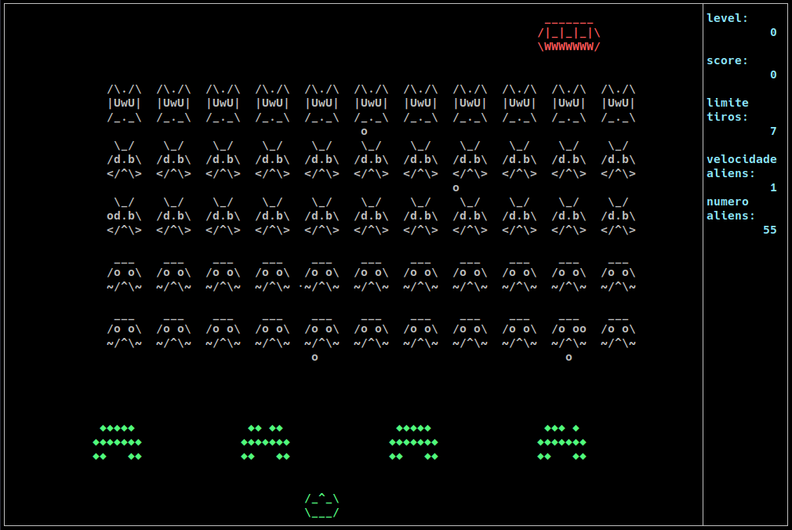

Alguns projetos que fiz para a UFPR
Space invaders em C:

Projeto no githubCompilador de Pascal para MEPA em lex e bison:
Projeto no githubCódigo em pascal:
program cmdIf (input, output); var i, j: integer; begin i:=0; while (i < j) do begin if (i div 2 * 2 = i) then i := 0 else i := 1; i := i+1 end end.Código em MEPA:
INPP AMEM 2 DSVS R00 R00: NADA CRCT 0 ARMZ 0, 0 R01: NADA CRVL 0, 0 CRVL 0, 1 CMME DSVF R02 CRVL 0, 0 CRCT 2 DIVI CRCT 2 MULT CRVL 0, 0 CMIG DSVF R04 CRCT 0 ARMZ 0, 0 DSVS R03 R04: NADA CRCT 1 ARMZ 0, 0 R03: NADA CRVL 0, 0 CRCT 1 SOMA ARMZ 0, 0 DSVS R01 R02: NADA DMEM 2 PARACifrador e decifrador feito em Haskell:
Cifra usada usa uma mistura do método de Vigenere e o método Play Fair
Projeto no githubTexto original usando a chave "cifra":
Cifra usada usa uma mistura do método de Vigenere e o método Play FairTexto cifrado:
YBKFQ8XPPV4VGQ238XF7HPENJKNURIF52J8YMM R00D56Q2MQPD0BSistema Operacional simples feito em C:
Projeto implementa o scheduler de um sistema, levando em conta a prioridade de processos além de permitir threads. Também adicionar a possibilidade de fazer o uso the "threads". Com isso também foi necessário implementar método que evitam "race conditions", por exemplo, semáforos.
Projeto no github